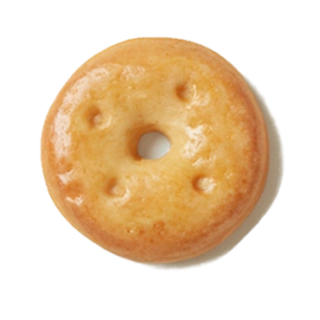
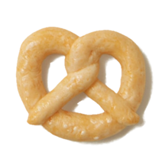
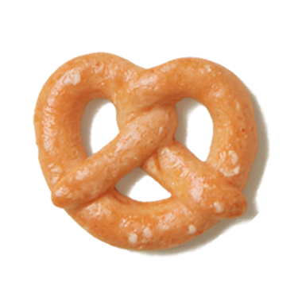
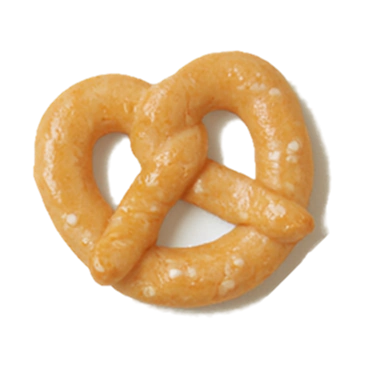
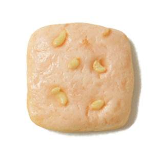

Deal Execution Intelligence · Early access 2026
Your pipeline, finally honest with you.
Pretzel Labs is an AI-powered Deal Intelligence and Execution solution built for data-driven B2B sales teams.
Signal-driven forecast
No rep logging
Built for B2B revenue teams


The engine behind every closed deal
Deal intelligence for B2B sales teams that would rather act on signal than on reports.
View all features→
Revenue runs on real signal.

Signal → insight → action. Closed loop.
The right signal, analyzed, and turned into a next step — in under a minute.

Commit a number you actually trust.
Signal truth on Monday. Risks before the board call. A forecast explained deal by deal.
Learn more →
Coach the actual problem, not the reported one.
Monday shows you the three deals that need you — not forty. 1:1s run on evidence, not vibes.
Learn more →
What changes when the signal is real
SituationWithout Pretzel LabsWith Pretzel Labs
Monday pipeline review
Reps tell you what they want you to hear. You update slides from gut feel.
Signal-verified view surfaces the three deals that need your attention before you ask.
Forecast commit
Built from rep optimism and manager rounding. Accurate under 25% of the time.
Backed by behavioral evidence. You commit a number you can explain deal by deal.
Deal goes dark
You find out when the rep mentions it or the close date passes.
Silence flagged on day three. Coaching cue surfaced. There is still time to act.
Coaching a rep
"How is Torchlight looking?" Rep answers. You coach based on what they say.
"Engagement dropped after your demo — here is the behavioral pattern. What happened?"
Top rep leaves
Their deal knowledge, stakeholder maps, and winning patterns leave with them.
Everything captured. The next rep inherits the full picture and picks up without starting over.
New sales initiative
You train the team, then wait a quarter to see if anything changed in results.
You see behavioral signal change within days. Adjust before the window closes.